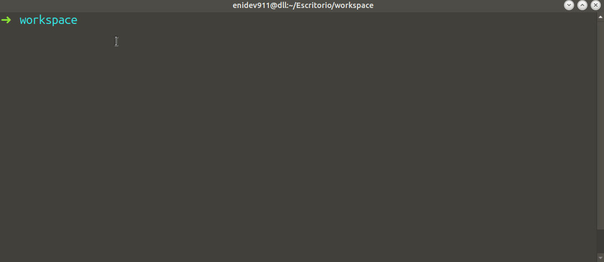

INSTALACIÓN Y CONFIGURACIÓN


Instalar los paquetes de PostgreSQL desde los repositorios predeterminados de Ubuntu. Para ello es necesario actualizar el índice de paquete:
sudo apt update
Luego, podemos instalar el paquete de Postgre junto al paquete postgresql-contrib, que agrega algunas utilidades y funcionalidades adicionales:
sudo apt install postgresql postgresql-contrib
Ahora que tenemos el software instalado, podemos analizar su funcionamiento. Por defecto, Postgres utiliza el concepto de “roles” para gestionar la autenticación y la autorización. Este aspecto es similar a las cuentas normales de estilo Unix, pero Postgres no distingue entre los usuarios y los grupos, y es por ello que prefiere usar el término más flexible como lo es “rol”.
Postgres se configura por defecto para usar la autenticación ident. Esto significa que asocia los roles de Postgres con una cuenta de sistema Unix o Linux correspondiente.
En el proceso de instalación Postgres creó una cuenta de usuario llamada postgres, que se asocia con el rol predeterminado de Postgres. Para comenzar a usar Postgres, podemos iniciar sesión en esa cuenta. Existen varias maneras de usar esta cuenta para acceder a Postgres.
Cambiar a la cuenta de postgres⚓
# una forma
sudo -i -u postgres
# otra forma
sudo su postgres
Ahora, podemos acceder al servidor de Postgres invocando al cliente de línea de comandos psql:
psql
También se puede ejecutar el comando con la cuenta de postgres de forma directa a través de sudo:
sudo -u postgres psql
Esto nos permitirá iniciar sesión de forma directa en Postgres sin el shell bash intermediario entre ellos.
Para salir de la sesión interactiva de Postgre, ejecutamos el meta comando:
\q
Ver demo

Crear un rol⚓
En este momento, solo tenemos el rol de postgres configurado dentro de la base de datos. Podemos
crear nuevos roles a partir desde la línea de comandos usando la herramienta
createrole y le indicamos la opción --interactive para que nos solicite
el nombre del nuevo rol y también nos preguntará si debería tener permisos de superusuario.
createuser --interactive
Si, como alternativa podemos usar sudo para cada comando sin dejar de usar nuestra cuenta normal:
sudo -u postgres createuser --interactive
Podemos ver más opciones adicionales de esta herramienta createuser:
man createuser
Crear nueva base de datos⚓
Otra susposición que el sistema de autenticación de Postgres realiza por defecto es que para cualquier rol creado para que pueda iniciar sesión deberá existir una base de datos con el mismo nombre del rol.
Esto significa que, si el usuario que desea acceder a Postgres con un rol llamado boba-fett, ese rol intentará conectarse con una base de datos, que por defecto, también se debe llamarse boba-fett. De lo contrario obtendremos un error por intentar acceder a una base de datos que no existe.
Podemos crear la base de datos apropiada usando la herramienta createdb.
createdb boba-feet
Para iniciar sesión con la autenticación basada en ident, necesitaremos un usuario de Linux con el mismo nombre del rol y su base de datos de Postgres.
Podemos crear un usuario en Linux con el comando adduser, Debe tener privilegios
sudo para ejecutar el comando:
sudo adduser boba-fett
Ahora nos deberá solicitar crear un password para el nuevo usuario, una vez se establece podemos iniciar sesión usando el siguiente comando:
su boba-fett
Nos pedirá la constraseña que establecimos anteriormente, iniciada la sesión ahora simplemente podemos invocar a psql:
psql